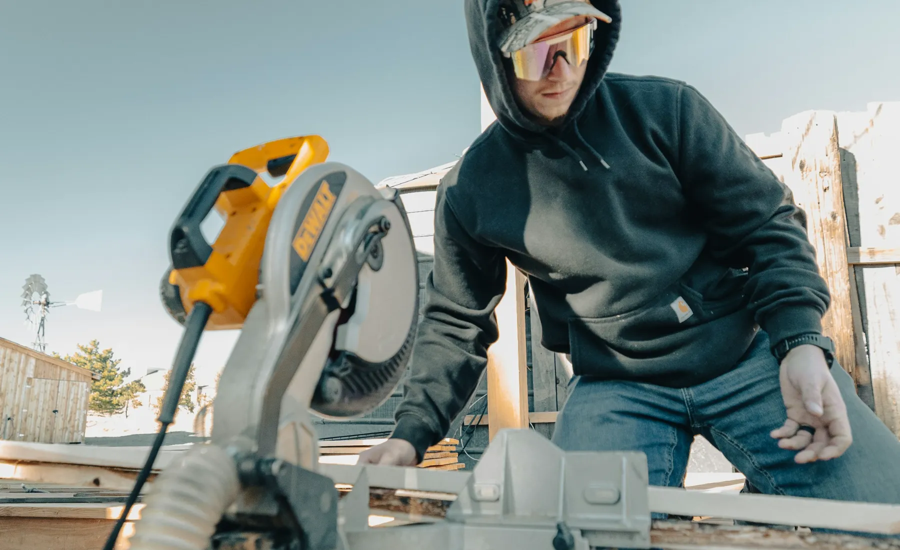
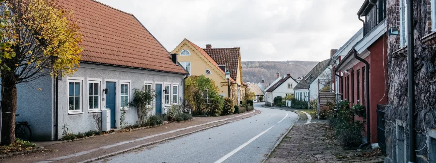

Vi lyssnar
Du berättar om dina idéer. Vi går igenom behov, önskemål och projektets förutsättningar.
 Kontakt
Kontakt
Åsens Bygg · Båstad & Skåne
Renovering, snickeri och nya möjligheter.
Med omsorg om huset och människorna i det.
Åsens Bygg AB
Mer plats vid köksbordet. Förvaring som passar under snedtaket. En altan som binder ihop huset och trädgården.
Vi hjälper dig att utveckla ditt hem, med praktiska lösningar och omsorg om detaljerna.
Lär känna Åsens ByggEtt urval från vårt eget projektarkiv. Utforska trä, material och lösningar för olika delar av hemmet.
Små detaljer. Större förändringar.
Måttanpassat för vardagen
Rummets vinklar och mått är en möjlighet. Vi bygger förvaring och snickerilösningar som tar vara på platsen.
Se våra specialsnickerierDu berättar om dina idéer. Vi går igenom behov, önskemål och projektets förutsättningar.
Omfattning, material och arbetsordning stäms av. Du får en offert att ta ställning till.
Vi håller kontakt under arbetet och fångar upp detaljer och frågor längs vägen.
Lokalt förankrat
Vi tror på ett bra bemötande, nära kontakt och ett noggrant genomfört arbete. Berätta om dina idéer så hittar vi nästa steg tillsammans.
Prata med Carl
Vi finns i Båstad och arbetar i hela Skåne. Berätta var projektet finns så pratar vi om möjligheterna.
Ja, vi erbjuder helrenovering och totalentreprenad. Vad som ingår och hur arbetet ska samordnas går vi igenom inför projektet.
Ja. Vi arbetar med möbler och specialsnickeri, bland annat förvaring anpassad till snedtak och utrymmets mått.
Vi hjälper till med ombyggnad och väggar. Vid bärande konstruktioner behöver rätt underlag och projektförutsättningar klarläggas innan arbetet utförs.
Ring Carl eller beskriv ditt projekt via kontaktfunktionen. Vi erbjuder kostnadsfria offerter och går igenom dina behov innan vi räknar på arbetet.
En tanke räcker för att börja